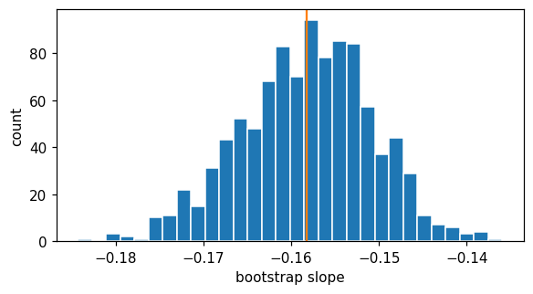

This notebook runs on Colab as-is. The badge link above and the GITHUB_RAW line in the setup cell already point to this repository, so everything installs and loads automatically.
Chapter 5 — Resampling Methods¶
Lab: validation set, k-fold CV, LOOCV, the bootstrap¶
Course: Quantitative Research Methods
Instructor: Prof. Dr. Christoph Weisser
Source: James, Witten, Hastie, Tibshirani & Taylor (2023), An Introduction to Statistical Learning, with Applications in Python, Springer. Companion code at statlearning.com.
Goal. Estimate test error of a regression in three ways and use the bootstrap to put a standard error on a regression coefficient.
Setup¶
Run this cell once. The ISLP package can be installed with pip install ISLP. As an alternative, the same data sets are available as CSVs in the workspace’s ALL CSV FILES - 2nd Edition folder.
Google Colab: this notebook also runs on Colab out of the box — the setup cell below installs any missing packages and downloads the data automatically.
# --- Setup: runs locally AND on Google Colab --------------------------------
# Silence only the spurious 'encountered in matmul' RuntimeWarnings that the macOS
# Accelerate BLAS emits; real warnings (deprecations, model caveats) stay visible.
import warnings
warnings.filterwarnings('ignore', message='.*encountered in matmul', category=RuntimeWarning)
import importlib.util, os, subprocess, sys
IN_COLAB = 'google.colab' in sys.modules
def _ensure(pkg, import_name=None):
"""pip-install pkg (quietly) if its import is missing."""
if importlib.util.find_spec(import_name or pkg) is None:
subprocess.run([sys.executable, '-m', 'pip', 'install', '-q', pkg], check=False)
if IN_COLAB: # Colab ships numpy/pandas/sklearn/statsmodels; add course extras
for _pkg, _imp in [('ISLP', 'ISLP')]:
_ensure(_pkg, _imp)
import numpy as np
import pandas as pd
import matplotlib.pyplot as plt
rng = np.random.default_rng(2024)
plt.rcParams['figure.dpi'] = 110
try:
from ISLP import load_data
HAVE_ISLP = True
except ImportError:
HAVE_ISLP = False
print('ISLP not installed; using CSV / URL fallbacks.')
# Local CSV location (repo layout first, then legacy paths, then a data/ cache).
_CANDIDATES = ['../ALL CSV FILES - 2nd Edition',
'ALL CSV FILES - 2nd Edition',
'../../ALL CSV FILES - 2nd Edition', 'data']
CSV = next((p for p in _CANDIDATES if os.path.isdir(p)), 'data')
# GITHUB_RAW lets a fresh Colab runtime fetch any
# CSV that is neither in ISLP nor already local (spaces in the folder -> %20).
GITHUB_RAW = ('https://raw.githubusercontent.com/ChrisW09/Quantitative-Research-Methods/main/'
'ALL%20CSV%20FILES%20-%202nd%20Edition')
# The four datasets NOT in the ISLP package -> load from the book's official
# site so the notebook works on a fresh Colab even before the repo is published.
KNOWN_URLS = {
'Advertising': 'https://www.statlearning.com/s/Advertising.csv',
'Heart': 'https://www.statlearning.com/s/Heart.csv',
'Income1': 'https://www.statlearning.com/s/Income1.csv',
'Income2': 'https://www.statlearning.com/s/Income2.csv',
}
def load(name, **read_csv_kwargs):
"""Load a course dataset. Order: ISLP package -> R datasets -> local CSV
-> official book URL -> your GitHub repo. Works locally and on Colab."""
if HAVE_ISLP:
try:
return load_data(name)
except Exception:
pass
if name == 'USArrests': # classic R dataset, not in ISLP
try:
import statsmodels.api as sm
return sm.datasets.get_rdataset('USArrests', 'datasets').data
except Exception:
pass
path = f'{CSV}/{name}.csv'
if os.path.exists(path): # running from the repo (local)
return pd.read_csv(path, **read_csv_kwargs)
remotes = ([KNOWN_URLS[name]] if name in KNOWN_URLS else []) + [f'{GITHUB_RAW}/{name}.csv']
for url in remotes: # fresh Colab: stream over https
try:
return pd.read_csv(url, **read_csv_kwargs)
except Exception:
continue
raise FileNotFoundError(
f"Could not load {name!r}. Put the CSV in '{CSV}/' or check your connection for the GITHUB_RAW fallback.")
1. The Auto data set¶
mpg against horsepower for 392 cars. Two data-loading details that matter: na_values='?' is required because this file marks missing horsepower with a literal question mark, which pandas would otherwise read as text and turn the whole column into strings; dropna() then removes the five affected cars.
The relationship is visibly curved, which is what makes this the right data set for the chapter — the question “which polynomial degree?” has a real answer here, and every resampling method in this notebook is a way of estimating it without touching a test set.
Auto = load('Auto', na_values='?').dropna().reset_index(drop=True)
X = Auto[['horsepower']].values
y = Auto['mpg'].values
Auto.head()
| mpg | cylinders | displacement | horsepower | weight | acceleration | year | origin | |
|---|---|---|---|---|---|---|---|---|
| 0 | 18.0 | 8 | 307.0 | 130 | 3504 | 12.0 | 70 | 1 |
| 1 | 15.0 | 8 | 350.0 | 165 | 3693 | 11.5 | 70 | 1 |
| 2 | 18.0 | 8 | 318.0 | 150 | 3436 | 11.0 | 70 | 1 |
| 3 | 16.0 | 8 | 304.0 | 150 | 3433 | 12.0 | 70 | 1 |
| 4 | 17.0 | 8 | 302.0 | 140 | 3449 | 10.5 | 70 | 1 |
2. Validation set approach¶
Note the StandardScaler() in front of PolynomialFeatures: standardising is only a reparametrisation — it changes the coefficients but not the fitted values — yet raw powers of a variable in the hundreds are so ill-conditioned that without it the least-squares solve for the higher degrees is no longer accurate, and the CV curve below becomes an artefact of whichever scikit-learn version you happen to run.
from sklearn.model_selection import train_test_split
from sklearn.preprocessing import PolynomialFeatures, StandardScaler
from sklearn.linear_model import LinearRegression
from sklearn.pipeline import make_pipeline
from sklearn.metrics import mean_squared_error
Xtr, Xte, ytr, yte = train_test_split(X, y, test_size=0.5, random_state=1)
for d in range(1, 6):
m = make_pipeline(StandardScaler(), PolynomialFeatures(degree=d),
LinearRegression()).fit(Xtr, ytr)
print(f'degree {d}: validation MSE = {mean_squared_error(yte, m.predict(Xte)):.3f}')
degree 1: validation MSE = 24.802
degree 2: validation MSE = 18.848
degree 3: validation MSE = 18.805
degree 4: validation MSE = 18.712
degree 5: validation MSE = 18.324
3. \(k\)-fold cross-validation¶
Split the data into 10 folds; each fold is held out once while the model trains on the other nine, and the ten held-out MSEs are averaged. shuffle=True matters here because Auto is ordered by model year — without it the folds would be year blocks rather than random samples.
The scoring is negated because scikit-learn maximises scores by convention, so a loss enters as its negative.
from sklearn.model_selection import KFold, cross_val_score
cv = KFold(n_splits=10, shuffle=True, random_state=0)
for d in range(1, 11):
m = make_pipeline(StandardScaler(), PolynomialFeatures(degree=d),
LinearRegression())
score = -cross_val_score(m, X, y, cv=cv,
scoring='neg_mean_squared_error').mean()
print(f'degree {d}: CV MSE = {score:.3f}')
degree 1: CV MSE = 24.208
degree 2: CV MSE = 19.185
degree 3: CV MSE = 19.276
degree 4: CV MSE = 19.478
degree 5: CV MSE = 19.137
degree 6: CV MSE = 19.050
degree 7: CV MSE = 18.822
degree 8: CV MSE = 18.901
degree 9: CV MSE = 19.082
degree 10: CV MSE = 19.890
Reading the output. The drop from degree 1 to degree 2 is large — 24.21 to 19.19 — and everything after it is flat, wandering between 19.0 and 19.5 with no trend. That shape is the whole message: there is one real curvature in these data, a quadratic captures it, and the differences past degree 2 are smaller than the noise in the estimate itself.
The practical rule this motivates is to prefer the simplest model within noise of the best, not the literal argmin. Degree 6 scores marginally lowest here, and choosing it on that basis would be reading randomness.
4. LOOCV (leave-one-out)¶
\(k\)-fold taken to its limit: \(k = n\), so every observation is held out alone. Each training set is nearly the whole data set, which makes LOOCV almost unbiased for the test error — but the \(n\) fits are highly correlated with each other, so the estimate has higher variance than 10-fold. That is the trade-off inside the estimate, and the reason 10-fold is usually preferred.
Only degrees 1–5 are run below, and even that is 392 fits per degree.
from sklearn.model_selection import LeaveOneOut
loo = LeaveOneOut()
for d in range(1, 6):
m = make_pipeline(StandardScaler(), PolynomialFeatures(degree=d),
LinearRegression())
score = -cross_val_score(m, X, y, cv=loo,
scoring='neg_mean_squared_error').mean()
print(f'degree {d}: LOOCV MSE = {score:.3f}')
degree 1: LOOCV MSE = 24.232
degree 2: LOOCV MSE = 19.248
degree 3: LOOCV MSE = 19.335
degree 4: LOOCV MSE = 19.424
degree 5: LOOCV MSE = 19.033
Note how 10-fold and LOOCV give similar pictures, but LOOCV runs \(n = 392\) fits.
5. The bootstrap¶
Estimate the SE of the slope of mpg ~ horsepower.
Cross-validation estimates prediction error. The bootstrap answers a different question: how much would this estimate move if the sample were redrawn? Resample \(n\) rows with replacement, refit, and the spread of the 1,000 refitted slopes is the standard error — with no appeal to a formula, a normal approximation, or any assumption that the model is correctly specified.
from sklearn.linear_model import LinearRegression
rng = np.random.default_rng(0) # re-seed as on the slide, so the printed
# SE matches the deck (0.0075 vs OLS 0.0064)
B = 1000
boots = np.empty(B)
n = len(X)
for b in range(B):
idx = rng.integers(0, n, size=n)
boots[b] = LinearRegression().fit(X[idx], y[idx]).coef_[0]
print('bootstrap SE :', boots.std(ddof=1).round(4))
print('bootstrap 95% CI :', np.quantile(boots, [0.025, 0.975]).round(4))
import statsmodels.api as sm
Xc = sm.add_constant(X)
ols = sm.OLS(y, Xc).fit()
print('OLS SE :', round(ols.bse[1], 4))
print('OLS 95% CI :', ols.conf_int().iloc[1].round(4).tolist()
if hasattr(ols.conf_int(), 'iloc') else ols.conf_int()[1].round(4).tolist())
bootstrap SE : 0.0075
bootstrap 95% CI : [-0.1732 -0.1443]
OLS SE : 0.0064
OLS 95% CI : [-0.1705, -0.1452]
Plot the bootstrap distribution.
fig, ax = plt.subplots(figsize=(6, 3))
ax.hist(boots, bins=30, edgecolor='white')
ax.axvline(boots.mean(), color='C1')
ax.set(xlabel='bootstrap slope', ylabel='count'); plt.show()

6. What is actually in a bootstrap sample?¶
Resampling \(n\) rows with replacement from \(n\) rows does not reproduce the data set — it leaves some rows out and duplicates others. The deck’s Exercise 5.5 works out how many. Each draw misses a given observation with probability \(1 - 1/n\), and the \(n\) draws are independent, so
Worth checking against a simulation, because the limit is approached remarkably fast.
boot_rng = np.random.default_rng(7) # a local generator: leaves `rng` untouched
# so the bootstrap SE above stays reproducible
print(f"{'n':>6} {'theory: included':>17} {'simulated':>10}")
for n_ in [5, 10, 100, 1000]:
theory = 1 - (1 - 1 / n_) ** n_
draws = boot_rng.integers(0, n_, size=(20_000, n_)) # 20k bootstrap samples
simulated = (draws == 0).any(axis=1).mean() # is row 0 present?
print(f'{n_:>6} {theory:>17.4f} {simulated:>10.4f}')
print(f'\nlimit 1 - 1/e = {1 - np.exp(-1):.4f}')
print(f'so on average {np.exp(-1):.1%} of rows are left out of any one resample')
n theory: included simulated
5 0.6723 0.6744
10 0.6513 0.6490
100 0.6340 0.6283
1000 0.6323 0.6387
limit 1 - 1/e = 0.6321
so on average 36.8% of rows are left out of any one resample
Reading the output. For \(n = 5\) the inclusion probability is 0.6723, for \(n = 1000\) it is 0.6323, and the limit is 0.6321 — matching the deck, and the simulation agrees to within its own Monte-Carlo error. Convergence is essentially complete by \(n = 100\).
Two things follow. First, each bootstrap resample contains only about 63% of the distinct rows, with the rest duplicated — the bootstrap distribution in §5 is built from samples that are less diverse than the original data, which is why the method needs \(n\) to be reasonably large. Second, that leftover 36.8% is not waste: it is exactly the out-of-bag sample that random forests in Chapter 8 use as free validation, and the reason each observation is out-of-bag for roughly a third of the trees.
7. Exercises¶
Bootstrap the intercept and compare to the OLS SE.
Repeat the polynomial CV using
weightinstead ofhorsepower. Which degree wins?Write a function
boot_stat(data, stat, B=1000)that returns \(B\) bootstrap replications ofstat(data).Use the bootstrap to estimate the SE of the minimum of a Gaussian sample. Compare with the parametric formula.
Lecture exercises — worked Python solutions¶
The cells below mirror the [Python]-tagged exercises from the Chapter 5 lecture slides, with fully worked, runnable solutions and the expected numeric answers (stored as inline comments). Each solution uses the load() helper from the setup cell, so it runs locally or on Colab with no hard-coded paths.
Exercise 5.6 — Bootstrap SE of the Portfolio \(\alpha\) [Python]¶
The Portfolio data has two return series X and Y. The minimum-variance allocation to asset X is
$\(\hat\alpha=\frac{\hat\sigma_Y^2-\hat\sigma_{XY}}{\hat\sigma_X^2+\hat\sigma_Y^2-2\hat\sigma_{XY}}.\)\(
Compute \)\hat\alpha\( on the full sample and estimate its standard error with \)B=1000\( bootstrap resamples (rows drawn *with replacement*, keeping each \)(X_i,Y_i)$ pair together).
# Exercise 5.6 -- bootstrap standard error of the Portfolio allocation alpha.
# alpha is a nonlinear ratio of variances/covariance, so no closed-form SE
# exists -> the bootstrap is the natural tool (ISLP Section 5.2).
Port = load('Portfolio') # columns X, Y (asset returns)
Xp, Yp = Port['X'].values, Port['Y'].values
def alpha_hat(x, y): # minimum-variance allocation
sx, sy = np.var(x, ddof=1), np.var(y, ddof=1) # sample variances
sxy = np.cov(x, y, ddof=1)[0, 1] # sample covariance
return (sy - sxy) / (sx + sy - 2 * sxy)
rng = np.random.default_rng(0) # reproducible (matches slide)
n, B = len(Xp), 1000 # B bootstrap replications
reps = np.empty(B)
for b in range(B):
idx = rng.integers(0, n, size=n) # ONE shared index -> keep pairs
reps[b] = alpha_hat(Xp[idx], Yp[idx]) # recompute alpha on the resample
print('alpha_hat :', round(alpha_hat(Xp, Yp), 4)) # 0.5758 (~0.58)
print('bootstrap SE :', round(reps.std(ddof=1), 4)) # 0.0912 (~0.09)
alpha_hat : 0.5758
bootstrap SE : 0.0912
Interpretation. The point estimate is \(\hat\alpha\approx0.58\) with a bootstrap standard error of \(\approx0.09\), matching ISLP Section 5.2: across resamples the estimated optimal allocation to asset X varies by about \(\pm0.09\) — an uncertainty statement that no closed-form formula supplies for \(\alpha\). Common mistake: drawing separate index vectors for X and Y, which destroys the \(X\)–\(Y\) covariance the statistic depends on; one shared idx keeps the pairs intact.
Extended Exercise 5.2 — Bootstrap SE: Statistic and Coefficient [Python]¶
Extend Exercise 5.6 in two directions: (1) report a 95% percentile confidence interval for the Portfolio \(\hat\alpha\) alongside its bootstrap SE; and (2) bootstrap the OLS slope of mpg on horsepower in the Auto data and compare the bootstrap SE with the textbook (formula-based) OLS standard error.
# Extended Exercise 5.2 -- (1) percentile CI for alpha, (2) bootstrap the OLS
# slope and compare it with the formula-based SE. Reuses alpha_hat, Xp, Yp, n
# defined in Exercise 5.6 above.
import statsmodels.api as sm
# --- (1) Portfolio alpha: bootstrap SE + 95% percentile interval ----------
rng = np.random.default_rng(0) # reproducible (matches slide)
reps = np.empty(1000)
for b in range(1000):
idx = rng.integers(0, n, size=n) # one shared index -> keep pairs
reps[b] = alpha_hat(Xp[idx], Yp[idx])
print('alpha_hat :', round(alpha_hat(Xp, Yp), 4)) # 0.5758
print('alpha SE :', round(reps.std(ddof=1), 4)) # 0.0912
print('alpha 95% pctile :', np.round(np.quantile(reps, [.025, .975]), 3)) # [0.413 0.77]
# --- (2) Auto: bootstrap OLS slope vs formula-based SE --------------------
Auto = load('Auto', na_values='?').dropna()
hp = Auto['horsepower'].values.astype(float) # predictor
mpg = Auto['mpg'].values # response
ols = sm.OLS(mpg, sm.add_constant(hp)).fit() # single fit -> formula SE
print('OLS slope :', round(ols.params[1], 4)) # -0.1578
print('OLS formula SE :', round(ols.bse[1], 5)) # 0.00645
rng = np.random.default_rng(0)
m = len(hp)
slopes = np.empty(1000)
for b in range(1000):
idx = rng.integers(0, m, size=m) # resample rows with replacement
slopes[b] = sm.OLS(mpg[idx], sm.add_constant(hp[idx])).fit().params[1]
print('bootstrap SE :', round(slopes.std(ddof=1), 5)) # 0.00746
print('bootstrap 95% CI :', np.round(np.quantile(slopes, [.025, .975]), 4)) # [-0.1732 -0.1443]
alpha_hat : 0.5758
alpha SE : 0.0912
alpha 95% pctile : [0.413 0.77 ]
OLS slope : -0.1578
OLS formula SE : 0.00645
bootstrap SE : 0.00746
bootstrap 95% CI : [-0.1732 -0.1443]
Interpretation. The Portfolio 95% percentile interval \(\approx[0.41,\,0.77]\) turns the point estimate into an honest uncertainty range. For the Auto slope, the bootstrap SE (\(\approx0.0075\)) is close to the OLS formula SE (\(\approx0.0064\)), which validates the bootstrap. Where they differ the bootstrap is often more trustworthy: the formula SE assumes a correctly specified linear model with constant-variance errors, whereas the bootstrap assumes neither and picks up the mild nonlinearity/heteroscedasticity in Auto — hence the slightly larger bootstrap SE.